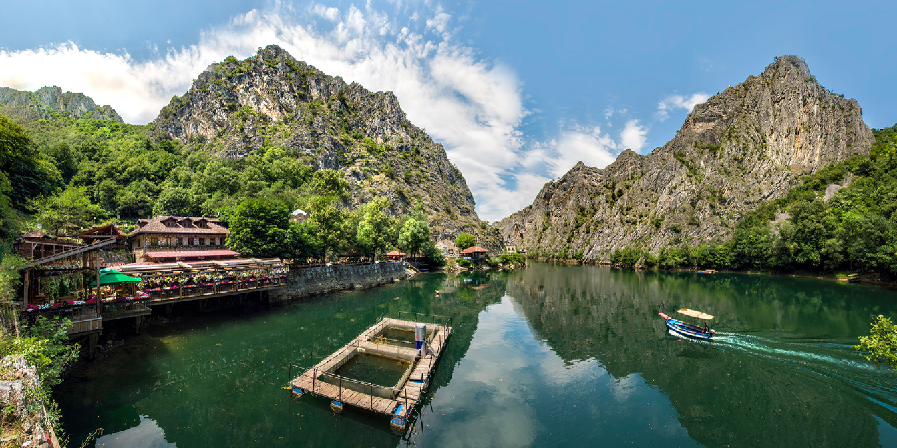
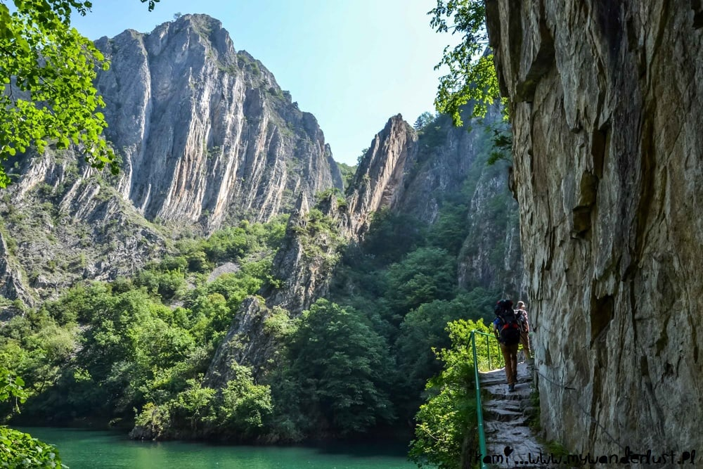
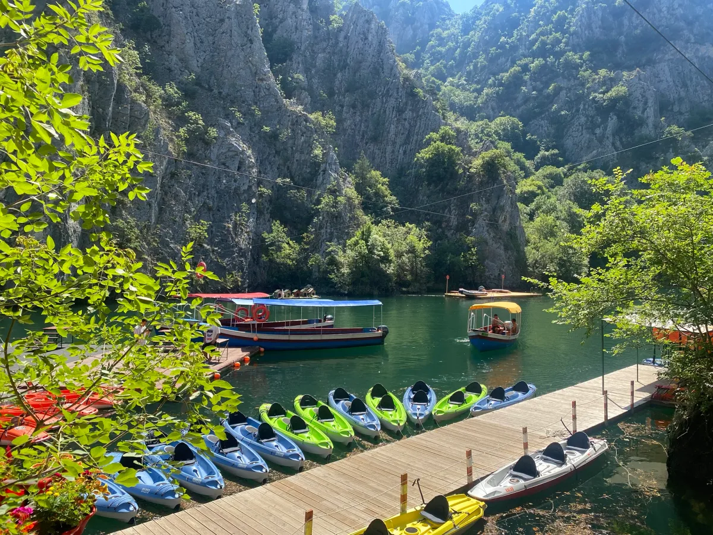
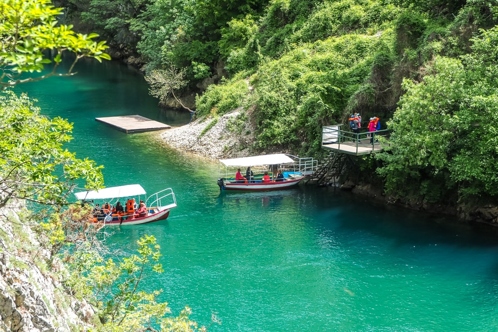

Canyon Matka is one of the most beautiful places in Skopje, North
Macedonia.
This wonderful gem of nature is located only 17 km away
from central Skopje, in the south-west direction.
This spectacular place was actually not made by nature. In 1938 the dam
was built on river Treska,
creating the artificial lake
surrounded by high mountains, the oldest lake of that kind in North
Macedonia.
The Canyon Matka covers the area of around 5,000 hectares. 20% of the
plant species you can see here are endemic,
meaning they can't be found anywhere else. You can also see 77 kinds of
butterflies in the area!
There are also ten caves at Canyon Matka, the most popular one being
Vrelo Cave.
It was even included on the list of top 77 natural sites of the world in
the New 7 Wonders of the World project.
There are plenty of things to do in Matka Canyon that can keep you busy for a few hours.



Is located on the right bank of the Treska River, the cave was listed as one of the top 77 natural sites in the world in the New7 Wonders of Nature project.

Take a look inside the Vrelo cave